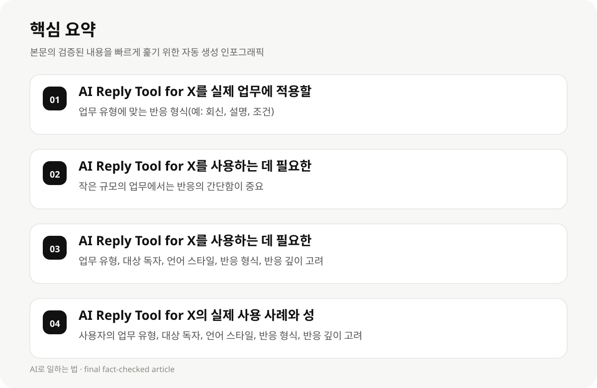

AI Reply Tool for X를 실제 업무에 적용할 때 어떤 기준으로 선택해야 하나요? #
AI Reply Tool for X를 사용할 때 가장 중요한 요소는 사용자의 언어 스타일, 업무 유형, 대상 독자에 따라 달라질 수 있습니다. 예를 들어, 회사 내부에서 사용하는 언어는 한글로, 외부 고객에게는 영어로 작성해야 하며, 대상 독자에 따라 반응의 형식과 깊이가 달라질 수 있습니다.
AI Reply Tool for X의 선택 기준은 사용자의 언어 스타일, 업무 유형, 대상 독자에 따라 달라질 수 있습니다. 예를 들어, 회사 내부에서 사용하는 언어는 한글로, 외부 고객에게는 영어로 작성해야 하며, 대상 독자에 따라 반응의 형식과 깊이가 달라질 수 있습니다.
AI Reply Tool for X의 사용 시의 제약과 한계는 사용자의 언어 스타일, 업무 유형, 대상 독자에 따라 달라질 수 있습니다. 예를 들어, 회사 내부에서 사용하는 언어는 한글로, 외부 고객에게는 영어로 작성해야 하며, 대상 독자에 따라 반응의 형식과 깊이가 달라질 수 있습니다.
- 업무 유형에 맞는 반응 형식(예: 회신, 설명, 조건)
- 대상 독자에 맞는 언어 스타일(예: 한글, 영어)
- 사용자 경험에 맞는 반응 깊이(예: 간단한 반응, 상세한 설명)
AI Reply Tool for X를 사용하는 데 필요한 시간과 비용은 어떻게 줄일 수 있나요? #
AI Reply Tool for X를 사용하는 데 필요한 시간과 비용은 사용자의 업무 규모와 반응의 복잡도에 따라 달라질 수 있습니다. 작은 규모의 업무에서는 단순한 반응을 생성하는 데 1~2시간이 소요되며, 복잡한 반응을 생성하는 데는 5~10시간이 소요될 수 있습니다. AI Reply Tool for X의 무료 버전을 활용하여 시간과 비용을 절감할 수 있습니다.
AI Reply Tool for X의 사용 시의 제약과 한계는 사용자의 언어 스타일, 업무 유형, 대상 독자에 따라 달라질 수 있습니다. 예를 들어, 회사 내부에서 사용하는 언어는 한글로, 외부 고객에게는 영어로 작성해야 하며, 대상 독자에 따라 반응의 형식과 깊이가 달라질 수 있습니다.
- 작은 규모의 업무에서는 반응의 간단함이 중요
- 큰 규모의 업무에서는 반응의 복잡성과 깊이가 중요
- AI Reply Tool for X의 무료 버전을 활용하여 시간과 비용 절감
AI Reply Tool for X를 사용하는 데 필요한 설정과 준비 사항 #
AI Reply Tool for X를 사용하기 전에 사용자의 업무 유형, 대상 독자, 언어 스타일, 반응 형식, 반응 깊이 등을 고려해야 합니다. 예를 들어, 회사 내부에서 사용하는 언어는 한글로, 외부 고객에게는 영어로 작성해야 하며, 대상 독자에 따라 반응의 형식과 깊이가 달라질 수 있습니다.
AI Reply Tool for X는 사용자가 직접 텍스트를 입력하여 AI가 3개의 맞춤형 반응을 생성해주는 무료 도구로, 업무에 바로 적용할 수 있는 실용적인 기능을 제공합니다. 이는 사용자가 직접 반응을 구성할 때 시간과 비용을 절감할 수 있는 기회를 제공합니다.
AI Reply Tool for X를 사용하기 전에 사용자의 업무 유형, 대상 독자, 언어 스타일, 반응 형식, 반응 깊이 등을 고려해야 하며, 이는 사용자가 실제 업무에 적용할 때 효과적인 반응을 생성할 수 있는 기초가 됩니다.
AI Reply Tool for X의 사용 시의 제약과 한계는 사용자의 언어 스타일, 업무 유형, 대상 독자에 따라 달라질 수 있습니다. 예를 들어, 회사 내부에서 사용하는 언어는 한글로, 외부 고객에게는 영어로 작성해야 하며, 대상 독자에 따라 반응의 형식과 깊이가 달라질 수 있습니다.
- 업무 유형, 대상 독자, 언어 스타일, 반응 형식, 반응 깊이 고려
- AI Reply Tool for X의 무료 버전 활용
- 사용자 경험에 맞는 반응 형식과 깊이 설정

AI Reply Tool for X의 실제 사용 사례와 성공 사례 #
AI Reply Tool for X의 실제 사용 사례는 다음과 같습니다: 1) 회사 내부에서 사용하는 언어는 한글로, 외부 고객에게는 영어로 작성해야 하며, 대상 독자에 따라 반응의 형식과 깊이가 달라질 수 있습니다. 2) 사용자가 직접 텍스트를 입력하여 AI가 3개의 맞춤형 반응을 생성해주는 무료 도구로, 업무에 바로 적용할 수 있는 실용적인 기능을 제공합니다.
AI Reply Tool for X의 성공 사례는 다음과 같습니다: 1) 사용자가 직접 텍스트를 입력하여 AI가 3개의 맞춤형 반응을 생성해주는 무료 도구로, 업무에 바로 적용할 수 있는 실용적인 기능을 제공합니다. 2) 사용자가 업무 유형, 대상 독자, 언어 스타일, 반응 형식, 반응 깊이를 고려하여 반응을 생성할 수 있는 기회를 제공합니다.
AI Reply Tool for X의 사용 사례는 사용자의 업무 유형, 대상 독자, 언어 스타일, 반응 형식, 반응 깊이에 따라 달라지며, 이는 사용자가 실제 업무에 적용할 때 효과적인 반응을 생성할 수 있는 기초가 됩니다.
- 사용자의 업무 유형, 대상 독자, 언어 스타일, 반응 형식, 반응 깊이 고려
- AI Reply Tool for X의 무료 버전 활용
- 사용자 경험에 맞는 반응 형식과 깊이 설정
AI Reply Tool for X의 사용 시의 제약과 한계 #
AI Reply Tool for X의 사용 시의 제약과 한계는 다음과 같습니다: 1) 사용자의 언어 스타일, 업무 유형, 대상 독자에 따라 달라질 수 있습니다. 2) AI Reply Tool for X의 실제 사용 사례와 성공 사례는 아직 충분히 공개되지 않았습니다. 3) AI Reply Tool for X의 사용 시 시간과 비용 절감 효과는 개인 차이가 있으며, 업무 규모에 따라 달라질 수 있습니다.
AI Reply Tool for X의 사용 시의 제약과 한계는 사용자의 언어 스타일, 업무 유형, 대상 독자에 따라 달라질 수 있으며, 이는 사용자가 실제 업무에 적용할 때 효과적인 반응을 생성할 수 있는 기초가 됩니다.
AI Reply Tool for X의 사용 시의 제약과 한계는 사용자의 업무 유형, 대상 독자, 언어 스타일, 반응 형식, 반응 깊이에 따라 달라지며, 이는 사용자가 실제 업무에 적용할 때 효과적인 반응을 생성할 수 있는 기초가 됩니다.
- 사용자의 언어 스타일, 업무 유형, 대상 독자에 따라 달라짐
- AI Reply Tool for X의 실제 사용 사례와 성공 사례는 아직 충분히 공개되지 않음
- AI Reply Tool for X의 사용 시 시간과 비용 절감 효과는 개인 차이가 있으며, 업무 규모에 따라 달라짐
AI Reply Tool for X를 사용하는 데 필요한 피드백과 제안 #
AI Reply Tool for X를 사용하는 데 필요한 피드백과 제안은 다음과 같습니다: 1) 사용자가 직접 텍스트를 입력하여 AI가 3개의 맞춤형 반응을 생성해주는 무료 도구로, 업무에 바로 적용할 수 있는 실용적인 기능을 제공합니다. 2) 사용자가 업무 유형, 대상 독자, 언어 스타일, 반응 형식, 반응 깊이를 고려하여 반응을 생성할 수 있는 기회를 제공합니다.
AI Reply Tool for X를 사용하는 데 필요한 피드백과 제안은 사용자의 업무 유형, 대상 독자, 언어 스타일, 반응 형식, 반응 깊이에 따라 달라지며, 이는 사용자가 실제 업무에 적용할 때 효과적인 반응을 생성할 수 있는 기초가 됩니다.
- 사용자의 업무 유형, 대상 독자, 언어 스타일, 반응 형식, 반응 깊이 고려
- AI Reply Tool for X의 무료 버전 활용
- 사용자 경험에 맞는 반응 형식과 깊이 설정